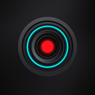

What is Rigcam?#
Rigcam turns an iPhone into a camera for multi-camera shoots. You can use it on its own as a manual video camera, or link it to Rigdesk on an iPad (or another iPhone) so one person can watch, switch and control every camera.

Answers for using Rigcam on its own as a manual video camera, and linked to Rigdesk as part of a multi-camera shoot.
Screenshots are from version 1.0 with example content, so your picture and names will differ. Tap a screenshot to enlarge it.
Rigcam turns an iPhone into a camera for multi-camera shoots. You can use it on its own as a manual video camera, or link it to Rigdesk on an iPad (or another iPhone) so one person can watch, switch and control every camera.
An iPhone on iOS 26 or later. To direct several phones, you also need Rigdesk, a separate free app, on an iPad or iPhone. No account is needed.
Rigcam shows "Camera access is off" with an Open Settings button. Tap it and turn Camera on for Rigcam.
Yes. Unlinked, the screen says SOLO. Tap the big record button to start and stop. Pick the resolution and frame rate in Settings (the gear button) under Recording.

Open Settings > Takes and photos on this iPhone. Each item can be shared, saved to Photos or deleted. They're also in the Files app under On My iPhone > Rigcam. They stay on the phone until you delete them.
After that, the phone reconnects on its own as a trusted camera.
No. Rigcam talks directly to the iPad. Keep Wi-Fi and Bluetooth on and Personal Hotspot off on every device. Stay within about 10 m (33 ft), in line of sight.
The director sees your picture live and can set focus, exposure, white balance and zoom, switch lenses or flip to the front camera, turn the light on and off, take photos, and start and stop recording. When your camera is the one on air, Rigcam shows a red ON AIR border. If the director locks the controls, you'll see "Controls locked by the director".

Only if the director allows it. In Settings, Record button shows either Starts all cameras or Director only. With Director only, the phone shows "In this session only the director starts and stops recording."
Rigcam shows "This session is landscape. Turn the phone to match." (or portrait). The take is always recorded the way you're actually holding the phone.
The full-quality file records on the phone. After you stop, it copies to the iPad and is checked for errors. In Takes and photos, each file shows waiting to copy, copying to the director… or copied to the director. The phone keeps its copy until you delete it.

Recording carries on, on the phone. When the link comes back, the phone reconnects and the copy resumes.
Open Settings. Under Director, tap Connect to a different director or Forget this director.

Settings > Camera name. The director sees the new name the next time the phone connects.
Yes. Settings > Keep the screen awake in a session is on by default.
Yes. Rigcam is free with no purchases inside. The optional upgrade, RigKit Pro, is bought in Rigdesk, and it covers the whole rig, including every Rigcam phone linked to it. See the Rigdesk FAQ for prices, trials, restore and cancelling.
No account, no ads, no tracking. Your video, audio and photos stay on your devices. Linked to Rigdesk, the preview and clips go directly from the phone to your iPad, encrypted, and never to us. Rigcam sends nothing to us or to RevenueCat.
Wait for the code. Codes match stays disabled until it appears. If you see "Pairing didn't complete. Try again.", tap Cancel and connect again. If the iPad says "This iPad's identity changed", forget the director in Settings and pair again.

Turn on Microphone for Rigcam in the iPhone's Settings app. Video still records without it.
Rigcam stops a take when the phone is almost out of space. Free up space, or delete takes that have already copied (they show copied to the director).
Email jeramey.beck@gmail.com. Support page: https://jbeck22.github.io/rigkit/